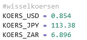
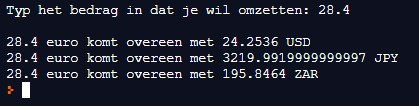

Schrijf een programma dat een bedrag in Euro omzet naar Amerikaanse dollar(USD), Zuid-Afrikaans Rand(ZAR) en de Japense Yen (JPY).
De wisselkoersen zijn:
Deze wisselkoersen liggen vast en veranderen niet in het programma. Zo’n waarden worden ook wel constanten genoemd.
Veel programmeertalen geven je de mogelijkheid om “constanten” te creëren, wat waardes zijn die aan een variabele zijn toegekend, die geen andere waarde meer kan krijgen. Het is conventie dat alle letters in dit soort variabele namen hoofdletters zijn. Constanten kunnen gebruikt worden om code leesbaarder en onderhoudbaarder te maken.
In je programma voeg je onderstaande toe om de constanten te maken.

Hieronder een schermafdruk van een uitvoering van het programma:
